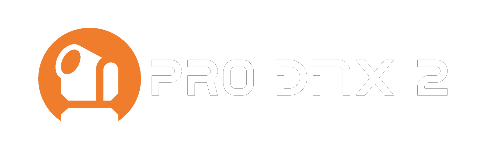
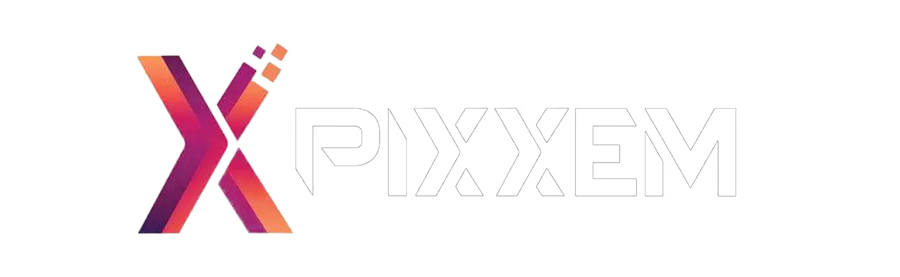

Expérience professionnelle · Support technique
Chromateq — Technicien Support Client
Chromateq est un acteur spécialisé dans les solutions de contrôle d’éclairage DMX utilisées dans des projets architecturaux, événementiels et scéniques partout dans le monde.
En tant que technicien support, j’ai accompagné les clients dans la prise en main des produits, assuré les tests fonctionnels avant mise en vente et contribué à la documentation technique et à la maintenance.

Contexte & entreprise
Chromateq
Chromateq développe, fabrique et fournit des solutions de contrôle d’éclairage stables, efficaces et compétitives pour les professionnels du DMX dans le monde entier.
Les produits sont utilisés dans des contextes variés : installations architecturales, commerces, lieux de divertissement, scènes et événements live.
Mission
- Assurer la qualité des produits via des tests fonctionnels avant mise sur le marché.
- Accompagner les clients dans la résolution de problèmes techniques complexes.
- Contribuer à une expérience client fiable et rassurante sur l’ensemble de la gamme.
Mon rôle
Tests fonctionnels & validation
- Réalisation de tests complets avant mise en vente des produits.
- Analyse des dysfonctionnements et remontée des bugs aux équipes internes.
- Vérification de la stabilité et de la fiabilité des solutions matérielles et logicielles.
Support technique & relation client
- Assistance technique à distance (FR / EN) auprès des clients internationaux.
- Diagnostic des problèmes de configuration DMX et des contrôleurs.
- Proposition de solutions concrètes et pédagogiques adaptées aux contextes d’utilisation.
Documentation & formation
- Rédaction et mise à jour de la documentation technique des produits.
- Création de supports expliquant l’installation, l’utilisation et la maintenance.
- Animation de sessions de formation pour aider les clients à tirer le meilleur parti des solutions Chromateq.
Compétences & technologies utilisées
Compétences métier
- Tests fonctionnels et validation produit.
- Support technique et gestion de la relation client.
- Pédagogie et vulgarisation des sujets techniques.
Compétences techniques
- Diagnostic matériel et logiciel sur des solutions d’éclairage DMX.
- Maintenance et réparation de produits électroniques.
- Rédaction de documentation technique claire et structurée.
Logiciels utilisés
TeamViewer
Support distant
Utilisé pour l’assistance technique à distance : prise en main des postes clients, diagnostic en temps réel et résolution des incidents sans déplacement.

Pro DMX
Contrôle DMX
Logiciel interne de contrôle DMX utilisé pour configurer et tester les installations d’éclairage, les scénarios et les show lumière.

Pixxem
Gestion d’effets
Utilisé pour l’analyse et la gestion avancée des équipements d’éclairage et de projection, notamment sur des installations complexes.
FileZilla
Transfert de fichiers
Outil FTP utilisé pour transférer des mises à jour, des correctifs et des fichiers de configuration entre les serveurs et les machines clients.
Découvrir Chromateq
Pour en savoir plus sur les produits et solutions d’éclairage DMX proposés par Chromateq, consultez le site officiel.